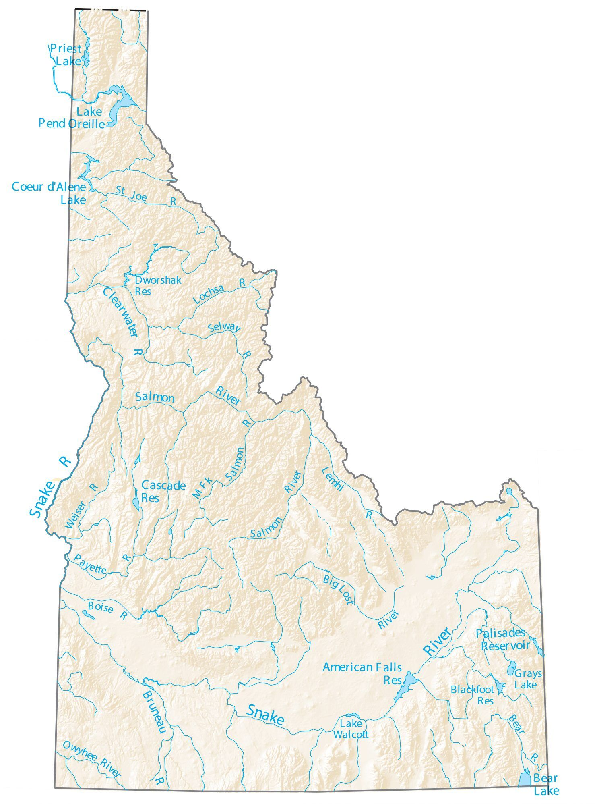

Idaho Rivers
Idaho is one of the biggest and strongest states that has and promote actively water rafting. No other state can claim as many recreational river miles as Idaho. The American Whitewater Affiliation counts more than 3,100 whitewater river miles in the state.
Some of the most powerful white waters are in the middle fork of the Salmon, hells canyon and Snake rivers. Interestingly, some of those rivers also have calm waters and beautiful scenes which makes it perfect for family and friends’ excursions.
You will be able to find important information about the different rivers you can visit, check availability, and learn more about the multiple services we offer on each of those rivers. Some of them are guides rowing the rafts, equipment rentals, short trainings and full courses, restaurants, restrooms, hotels, and camping.
han just the rapids. It's a great way to get away from it all and relax amongst all the beauty of the great outdoors.
Check availability